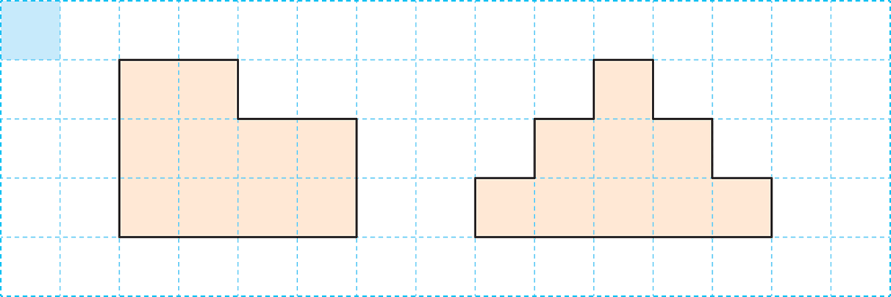
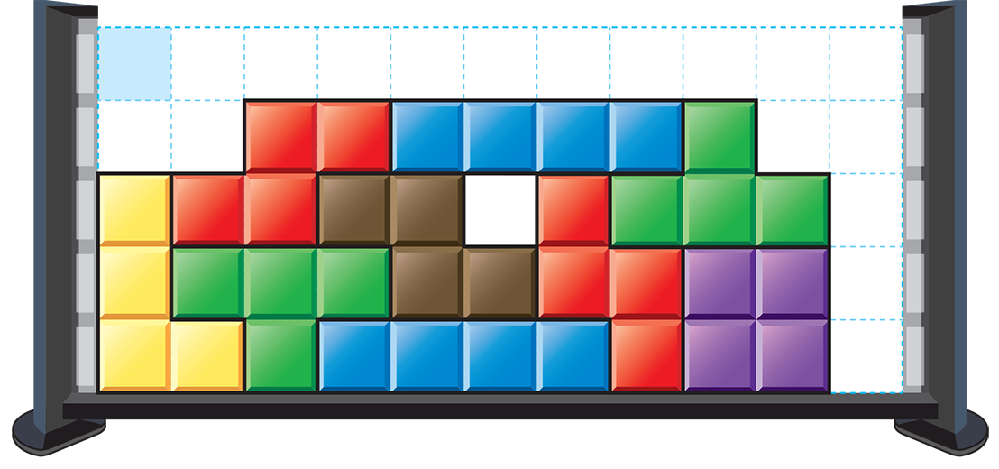
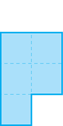
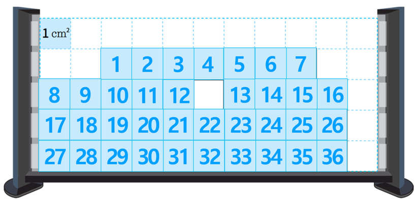

- 1
- 2
- 3
- 4~5
- 4
- 5
- 6
-
1 주어진 넓이를 쓰고 읽어 보세요.
-
1 ㎠
-
쓰기1 ㎠1 ㎠읽기1 제곱센티미터5 ㎠
-
쓰기5 ㎠5 ㎠읽기5 제곱센티미터
2 넓이가 8 ㎠인 것을 모두 찾아 표 하세요.
그림을 클릭하세요.- 1 ㎠
3 안에 알맞은 수를 써넣으세요.
 1 ㎠ 도형 가는 도형 나보다 넓이가
㎠ 더 넓습니다.1[4~5] 조각 맞추기 놀이를 하고 있습니다. 물음에 답하세요.
 1 ㎠ 4 으로 채워진 부분의 넓이는 모두 얼마인가요?
㎠85 모양 조각이 차지하는 부분의 넓이는 얼마인가요?
㎠366 도형의 넓이를 1㎠씩 늘리며 규칙에 따라 그리려고 합니다. 빈칸에 알맞은 도형을 그려 보세요.
1 ㎠ 예3 ㎠4 ㎠5 ㎠6 ㎠-
-
도형 가의 넓이: 1㎠가 10개 있으므로 10 ㎠
도형 나의 넓이: 1㎠가 9개 있으므로 9 ㎠
따라서 도형 가는 도형 나보다 1 ㎠ 더 넓습니다.
-
-
-
는 1 ㎠가 4개 있으므로 4 ㎠입니다.
가 2개 있으므로 4×2＝8(㎠)입니다.
-
-
-
그림에서 모양 조각이 차지하는 부분은 1 ㎠가 36개입니다.
따라서 36 ㎠입니다.

-
-
-
도형을 그리는 규칙은 왼쪽 아래 또는 오른쪽 아래 한 칸씩 늘어나는 것입니다. 빈칸에 알맞은 도형의 넓이는 5㎠이므로 왼쪽 아래가 한 칸 늘어난 모양이거나,
오른쪽 아래가 한 칸 더 늘어난 모양이어야 합니다.
-
-
-